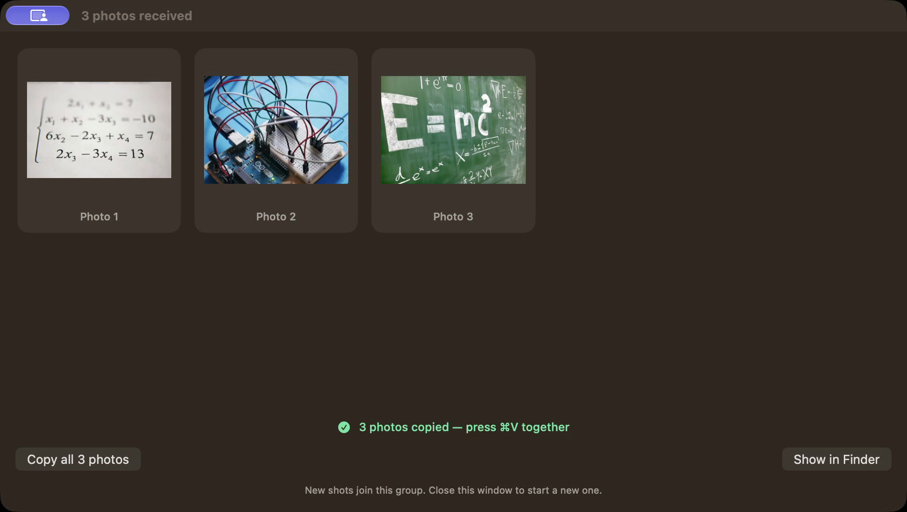

Capture on iPhone
Use your usual screenshot buttons. Or, for camera capture, open the optional ShotSkiff companion.
A small Mac utility · Free & open source
Take a screenshot or capture a photo. ShotSkiff brings it to your Mac, ready to preview, paste, or drag into your work.
macOS 14+ · Apple Silicon build · Screenshot setup needs Python 3 and libimobiledevice

HOW IT WORKS
Use your usual screenshot buttons. Or, for camera capture, open the optional ShotSkiff companion.
New screenshots arrive through your trusted iPhone connection. Camera photos use encrypted local transfer.
Preview above your current app, copy to the clipboard, or drag into another app.
FROM IPHONE TO MAC
Use your regular iPhone screenshot buttons, or open the optional camera companion. Images appear in a floating Mac preview; paste or drag them into chats, notes, homework, design tools, engineering reports, and more. The phone footage below uses an iOS simulator and sample photos; the Mac receiver and clipboard flow were recorded locally.
Video notes and photo/music credits ↗MADE FOR THE LITTLE FRICTION
Take screenshots using the normal iPhone buttons; no iPhone companion required. Mac setup needs a trusted device connection and helper tools.
The optional iPhone companion sends original JPEG bytes over an encrypted local connection. It must be open to capture.
Successive arrivals join one organized preview. Group paste depends on the destination app's clipboard support and attachment limits.
A centered floating window stays above your current work. Every image arrival updates the clipboard.
No ShotSkiff cloud account or photo upload. Screenshot access uses Apple's trusted device channel; camera transfer is encrypted.
Mac keeps at most 20 app-managed images and permanently deletes older ones. Export important files first.
PICK YOUR SETUP
RECOMMENDED
Mac app + trust your iPhone + Python 3 and libimobiledevice. No custom iPhone app. USB is easiest for initial trust.
Mac setup guide →ADVANCED
Adds the iPhone camera companion. Requires Xcode, your own free Personal Team signing, and refresh before its seven-day profile expires.
iPhone setup guide →BEFORE YOU DOWNLOAD
Yes. MIT-licensed source, no ads, account, subscription, or cloud service.
Not for automatic screenshots. The camera workflow uses the optional companion and requires Xcode to install.
Camera transfer uses a direct encrypted local connection after pairing. Screenshot importing may use USB or Apple's previously trusted Wi-Fi device connection; wireless reachability is not guaranteed.
No. Images stay on your devices and local Mac inbox. We do not collect analytics.
The free Personal Team signing profile for the optional iPhone companion expires after seven days. Rebuild or use the optional local renewal helper; it is conditional and cannot bypass iOS trust prompts.
The free Mac build is ad-hoc signed and not notarized. Control-click → Open, then confirm. Never disable Gatekeeper or SIP.
This release is built and validated for Apple Silicon Macs. Intel and Windows are not supported by this release. Batch paste depends on the destination app.
Use Pause importing in the Mac setup panel. See the uninstall guide for app, settings, and retained image locations.